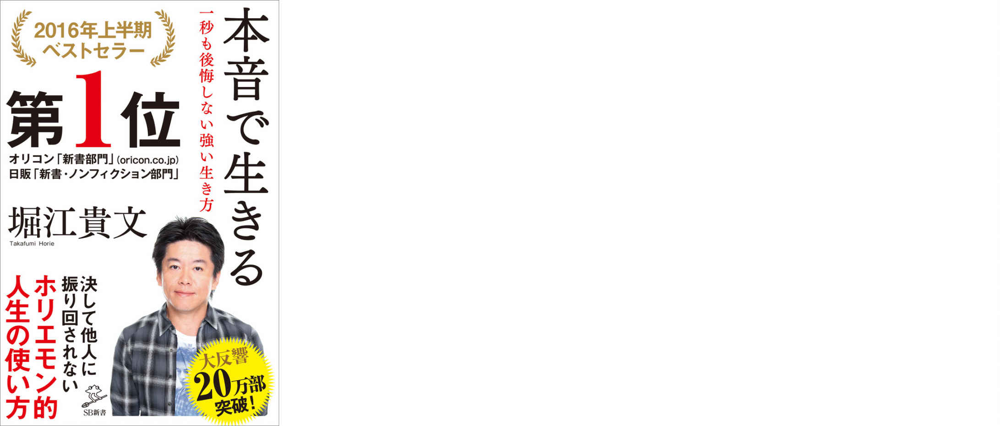
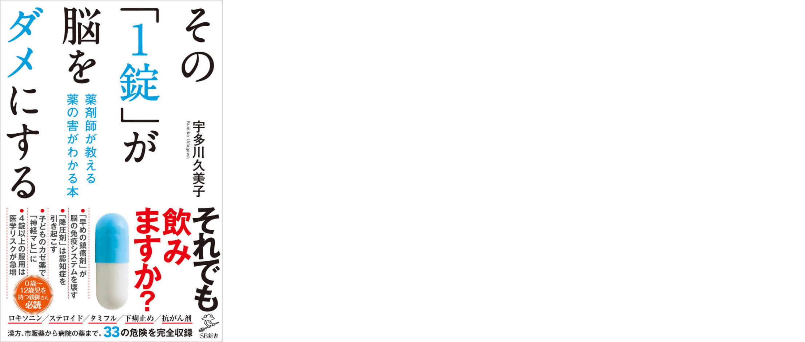
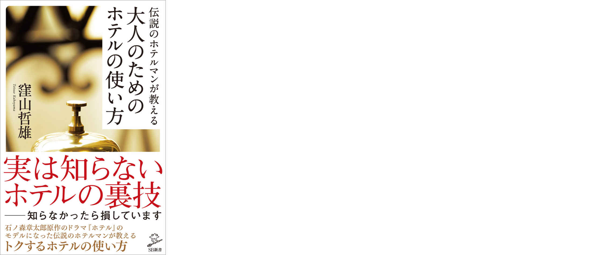
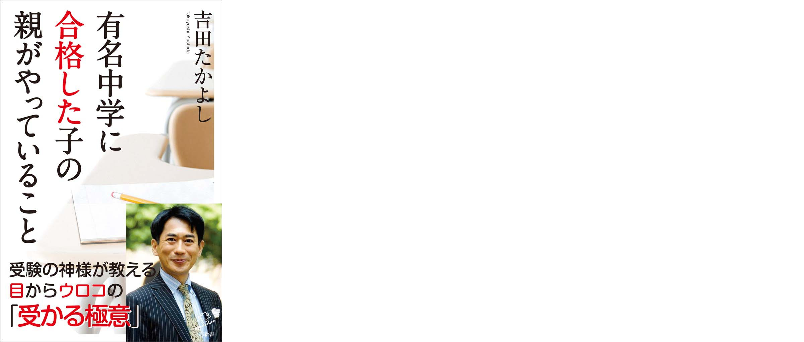

| SB新書 電子版目録2016 ［2015.12～2017.01］ | |
| SBクリエイティブ | |
| SBクリエイティブ株式会社 (2016) | |
本書に掲載されているコンテンツの著作権は、著作権法により保護されています。
これらについて、著作権法で認められるもの、規約等により許諾が明示されているものを除き権利者に無断で転載・複製・翻訳・販売・貸与・印刷・データ配信（Ｗｅｂページへの転載など送信可能化を含む）・改ざん等する行為は、固く禁じられています。
はじめに
全タイトル紙・電子完全同時発売、を掲げた2015年12月の新装刊から瞬く間に1年が過ぎました。スケジュールに全く余裕はなく、しかしもはや最近は心地よくもある（？）緊張感の中で毎月の制作、配信を続けて参りました。
当目録に収録した、新装刊以降2017年1月までの刊行点数は61にのぼります。これらのタイトルを眺めると、時々のトピックをいち早く取り上げるという新書の特徴が見事に表れたラインナップになっています。刊行月順に掲載していますので、目次の各書概要以下に並ぶタイトルをご覧になるだけでも、この1年の"大きな流れ"を振り返って頂けるのではないでしょうか。また、冒頭では売れ筋の中から更に私ども電子書籍のスタッフが特にお勧めしたい10冊を厳選、編集担当者だからこそ知り得る各々のエピソードをあわせて紹介しています。選択の一助に、そして、"ググ"っても出てこない、著者、編集者の想いを少しでも感じて頂けたなら幸いです。
もちろん、SB新書の完全同時発売は今後も継続します。毎月5日に必ず最新刊をお届けできるよう、一層邁進して参ります。新年初回を飾る2017年1月は一気に6タイトル刊行、いずれも今この時期だからこそ気になるテーマばかりです。「電子で読むSB新書」、今後ますますご注目・ご期待下さい。
2016年12月吉日
SBクリエイティブ 電子出版開発室
目次
2015年12月刊
・悔いのない人生 死に方から生き方を学ぶ「死生学」（齋藤 孝）
・自分を変える読書術 学歴は学〈習〉歴で超えられる（堀 紘一）
・ニュースの"なぜ？"は世界史に学べ 日本人が知らない100の疑問（茂木 誠）
・不安な未来を生き抜く知恵は、歴史名言が教えてくれる 「明日を変える力」を磨く55の言葉（竹中 平蔵）
2016年1月刊
・重要事件で振り返る戦後日本史 日本を揺るがしたあの事件の真相（佐々 淳行）
2016年2月刊
・自分の半径5mから日本の未来と働き方を考えてみよう会議（出口 治明／島澤 諭）
・認知症をつくっているのは誰なのか 「よりあい」に学ぶ認知症を病気にしない暮らし（村瀬 孝生／東田 勉）
2016年3月刊
・あの俳優は、なぜ短期間で英語が話せるようになったのか？（塩屋 孔章／ラッセル・トッテン）
・新宿駅はなぜ1日364万人をさばけるのか（田村 圭介／上原 大介）
・No.1ソムリエが語る、新しい日本酒の味わい方（田崎 真也）
2016年4月刊
・カツオが磯野家を片づける日 後悔しない「親の家」片づけ入門（渡部 亜矢）
・下流中年 一億総貧困化の行方（雨宮 処凛／萱野 稔人／赤木 智弘／阿部 彩／池上 正樹／加藤 順子）
・人類最強の「糖質制限」論 ケトン体を味方にして痩せる、健康になる（江部 康二）
・その「1錠」が脳をダメにする 薬剤師が教える 薬の害がわかる本（宇多川 久美子）
2016年5月刊
・〈坂バカ〉式 知識ゼロからのロードバイク入門（日向 涼子）
・「その後」が凄かった！関ヶ原敗将復活への道（二木 謙一［編著］）
・日本人の知らない日米関係の正体 本当は七勝三敗の日米交渉史（八幡 和郎）
・肥満外来の女医が教える 熟睡して痩せる 「3・3・7」睡眠ダイエット（左藤 桂子）
2016年6月刊
・なぜ、世界から戦争がなくならないのか？（池上 彰／「池上彰緊急スペシャル！」制作チーム）
・無敵の「1日1食」 疲れ知らずで頭が冴える！（三枝 成彰）
2016年7月刊
・伝説のホテルマンが教える 大人のためのホテルの使い方（窪山 哲雄）
・なぜ日本は同じ過ちを繰り返すのか 太平洋戦争に学ぶ失敗の本質（松本 利秋）
・モリタクの低糖質ダイエット ぶっちぎりのデブが４カ月で19.9kg減！（森永 卓郎）
・有名中学に合格した子の親がやっていること（吉田 たかよし）
2016年8月刊
・沿線格差 首都圏鉄道路線の知られざる通信簿（首都圏鉄道路線研究会）
・会話のしくじり 失敗から学ぶ「反面教師の会話学」（梶原 しげる）
2016年9月刊
・三国志「その後」の真実 知られざる孔明没後の後伝（渡邉 義浩／仙石 知子）
・スター・ウォーズに学ぶ「国家・正義・民主主義」 岡田斗司夫の空想政治教室（岡田 斗司夫）
・世界に通用する一流の育て方 地方公立校から〈塾なしで〉ハーバードに現役合格（廣津留 真理）
2016年10月刊
・これ、いったいどうやったら売れるんですか？ 身近な疑問からはじめるマーケティング（永井 孝尚）
2016年11月刊
・教養としての「昭和史」集中講義 教科書では語られていない現代への教訓（井上 寿一）
・51歳の初マラソンを３時間９分で走ったボクの練習法（鶴見 辰吾）
・長生きしたけりゃパンは食べるな（フォーブス 弥生／稲島 司［監修］）
2016年12月刊
・発達障害の子どもたち、「みんなと同じ」にならなくていい。（長谷川 敦弥／野口 晃菜［監修］）
2017年1月刊
2016年のイチ推し 厳選10
2015年12月の新装刊から2016年11月までに刊行された全51タイトルの中から、（電子書籍の）販売状況や読者の皆様からの反響等に、電子書籍担当者の独断と偏見（という名の、是非読んでほしい、の気持ち）を加え厳選した、"イチ推しタイトル"がこちら。編集担当者だからこそ知り得る本書にまつわるエピソードなど、ナマの声も紹介。いずれも必読の1冊！
本音で生きる 一秒も後悔しない強い生き方 （著：堀江 貴文）
本書で堀江さんに抱いていたイメージがガラリと変わった（電書担当T談）。本も26万部を突破（16年11月時点）、刊行から1年以上経った現在も人気衰えず。文句なしに新生SB新書の顔！

>>編集担当より
"We agree to disagree."（僕たちはわかりあえないことがわかりあえた）。
本書の中で一番心に残っている言葉です。本音で生きるというと「わがまま」とうイメージもありますが、そうではなく、その根底にあるのは「違いを認める」ということ。この発想があれば、他につぶされず、生きていくことができるのではないかと感じました。堀江さんの時間の使い方も必見です！
ニュースの"なぜ？"は世界史に学べ 日本人が知らない100の疑問 （著：茂木 誠）
読後満足度は今期随一！ビジネスパーソン、いえ、大人なら知っておくべき・理解しておくべき歴史やその背景がこれでもかというくらいギッシリ詰まった、必携そして永久保存の書。（電書担当I）
>>編集担当より
「わかりやすい！」と評判の本書。じつは校了前に世界的な大事件が起こりました。それが、パリ同時多発テロ事件。世界中を震撼させた事件こそ、本書が予見していた移民制度のひずみ。急きょ、校了ギリギリまで粘って情報を追加しました。そんな制作の熱がこもった1冊。ニュースをわかるために必読の1冊です。
日本は本当に戦争する国になるのか？ （著：池上 彰）
本書は、ベストオブ「今さら聞けない」ではないでしょうか。今年を振返り、また自国の未来を考える上でも今一度しっかり理解しておきたいテーマです。（電子担当U）
>>編集担当より
2015年10月。「安保法反対」の声を聞きながら、この法律を冷静に判断できている人がどれくらいいるのだろうと疑問に思った。「みんな、よくわからないまま不安な気持ちを抱えているんじゃないか？」。ここは「無知の代表」として池上さんに聞いてみたい！ 「池上さん、安保関連法って、結局何ですか？ きちんと考えるために1冊にまとめませんか？」。超多忙にもかかわらず、池上さんは「やりましょう！」と即答。このレスポンスの速さが、池上さんからのメッセージそのものだと感じた。知識ゼロの編集者のために、池上さんが丁寧に解説してくださったのが本書。この国の未来を自分で判断するために、とにかくわかりやすい「安保関連法」の教科書です。
その「1錠」が脳をダメにする 薬剤師が教える 薬の害がわかる本 （著：宇多川 久美子）
「効いたよね、早めの○○♪ 」――確かに子供の頃からン十年、何度となく刷り込まれてきたフレーズだ。それが常識ではない...どころか危険？！ 滅多に薬を飲まない私ですら思わず震えた衝撃の書。（電書担当K）

>>編集担当より
「ありがとうございます！」「こんな本を待っていた！」発売から半年以上経つ本書ですが、読者から感謝のハガキが、毎日のように届きます。それだけ、薬のことで悩んでいる人は多いのでしょう。元薬剤師だからこそ書けた医療や薬の真実。判断するのは、あなたです。
人はなぜ不倫をするのか （著：亀山早苗）
16年といえば不倫ニュースが相次ぎました。不倫を認めたい訳じゃないけれど、人間も所詮は動物、「絶対にいたしません」を貫くのは予想以上に難しいのでは...という想像に科学的なとどめを刺してくれました。（電書担当T）
>>編集担当より
名だたる学者の方々に「人ってなぜ不倫をするのですか？」と聞いたこの企画。
最初は先生方から冷たくあしらわれるのではと恐れていましたが、取材をさせていただくと、どの方も専門の観点に立って非常に深く、興味深いお話をしてくださいました。科学は非科学。そこには神秘がある。進化は盲目で目的がない。でも決して悪いほうには変わっていかない。そうおっしゃる方もいました。いま、不倫がなくなっていないとしたら、その理由は一体、どこにあるのでしょうか。
モリタクの低糖質ダイエット ぶっちぎりのデブが４カ月で19.9kg減！ （著：森永 卓郎）
炊きたてツヤツヤご飯、モッチモチのうどん...我慢できる訳がない！ と諦めていた私に勇気をくれた1冊。ミドル世代かつメダボ体型...つまり私と仲間の皆さま、本書を参考に共に頑張りましょう！（電書担当U）
>>編集担当より
「糖質制限（低糖質ダイエット）はお金がかかる」というのが、実は"糖質セイゲニスト"たちの悩みでした。ごはんやパンを断つ代わりに食べる肉や魚は値段が高めだからです。モリタクさんはそれを克服しているところが、けっこう革命的。超多忙な日常を送りながらも、なんと食費を週1,500円に収めているのです。天性の丸顔が災いしてか、テレビで見ると痩せていないように見えるかもしれませんが、リバウンドはほぼないそうです。けっこう革命的なモリタク式を、ぜひお試しあれ！
スター・ウォーズに学ぶ「国家・正義・民主主義」 岡田斗司夫の空想政治教室 （著：岡田 斗司夫）
SFやアニメで政治を紐解く？ 岡田さんの足元にも及びませんがアニヲタの私でもすぐにはピンと来なかった。しかし、読めばなるほど！アニメへの熱量（の一部）を"実世界"情勢に対する興味へと誘ってくれた稀有な本。（電書担当S）
>>編集担当より
今思えばトランプ大統領誕生を予言していたのが本書！ 「一見完璧だけど、もしかしたら欠陥商品かもしれないヒラリー・クリントンより、髪型も含めて欠陥丸出しのトランプの方が人間らしいと考えるのは、ある意味自然です」という原稿を見たときは「そうそう！」と思わず膝を叩いてしまいました。オタキングこと岡田斗司夫氏が複雑に見える政治の本質を「透視」します！
他人を引きずりおろすのに必死な人 （著：榎本 博明）
「そうそう」「いるいる」と本書を読む間頷き続けた。ただ溜飲を下げるに終わらず、適切な対処法も得られます。"今"、困っている方に届けたい1冊！（電書担当Ｉ）
>>編集担当より
はるかぜちゃん、という声優さんをご存知でしょうか。ネット住民から標的にされ、ときに罵詈雑言を浴びせられてきた人物です。そんな彼女が、なんと本書を読んで、「やばい！この本思った以上におもしろい」と感想を漏らしてくれたのです。効果は実証済み。ぜひ手に取ってみてください。
自分を変える読書術 学歴は学〈習〉歴で超えられる （著：堀 紘一）
「読書は学歴を凌駕する」学生時代に断言してくれる大人がいたら...。いや、端末に好きなだけ本を入れて持ち歩ける、そんな時代になったからこそ遅くはない、一読するべき読書術。（電書担当T）
心を動かす話し方 （著：堀 紘一）
いくら学力が高くても難しいことを分かりやすく話せる人は少ない、それはなぜか？これは営業マン向けの実用書でもプレゼン術指南書でもない、コミュニケーションの基本を説く本だ。多くの人に是非読んでほしい。（電書担当K）
>>編集担当より
1990年代、カリスマコンサルタントとして名を馳せていた堀紘一さんは、憧れの存在でした。とにかく話が面白い。どんな話でも引き込まれてしまうのです。難しいことでも分かりやすく、分かりやすいことを深掘りして、深掘りしたことをさらに面白く話してくれます。いつか一緒にお仕事をしたいと思って、ついに念願が叶い『自分を変える読書術』では圧倒的な実経験と積み重ねに裏打ちされたノウハウを惜しげもなく公開してくださいました。そして、この秋に本丸の『心を動かす話し方』へ。20年来の憧れである"知の巨人"が、ごく自然に引き込まれる話の背景にある、とてもロジカルな戦略を教えてくれました。
悔いのない人生 死に方から生き方を学ぶ「死生学」
齋藤 孝
出版（紙）日 2015/12/04
【内容紹介】
「死」を考えれば「生」は輝く！
人生で後悔したくなければ「縁起でもない！？」ことを考えよう！
長寿社会で生きる現代人は死を遠ざけ、希薄化し、死に対してもはや不感症になりつつある。古典からの叡智をひもときつつ、死を意識し、考えることは、すなわちより＜よく＞生きる方法を見つけることにもつながるのだ。
自分を変える読書術 学歴は学〈習〉歴で超えられる
堀 紘一
出版（紙）日 2015/12/04
【内容紹介】
読書は運を支配する。
どこそこの大学卒だから学歴が高いという風潮、つまり大学受験における偏差値で評価する日本の学歴の捉え方は、諸外国とは大きく異なっていることを知っておくべきだ。
「学歴なんてクソくらえ」ということが本書を読み進んでいくことによってわかってもらえると思う。
――序章より
常識破りの川内優輝マラソンメソッド
津田 誠一
出版（紙）日 2015/12/04
【内容紹介】
マラソンの「壁」を打ち破れ！
公務員ランナーとして知られる川内優輝選手（埼玉県庁）。オーバートレーニングで故障してばかりの高校時代は無名の選手だった。しかし、学習院大学陸上競技部監督（著者）の独特の練習スタイルが川内選手の人生を好転させた。本書では、"川内メソッド"の生みの親が、その原点から市民ランナーの活用法に至るまでを解説。自己記録更新を目指す市民ランナー必読の一冊。
日本は本当に戦争する国になるのか？
池上 彰
出版（紙）日 2015/12/04
【内容紹介】
安保法案のモヤモヤを池上さんが解消！
安保関連法について、「正直よくわからない」。関心はあるけれど曖昧な知識ではっきり主張できずにいる人たちへ向けて。あなたの安保法案にまつわるモヤモヤを解説する、「安保関連法」に関する池上さん初の書籍。
安保関連法可決で、これからの日本はどう変わるのか？
自衛隊の活動範囲は、具体的にどう変わるのか？
日本は本当に戦争にかかわるリスクが高まったのか？
ニュースの"なぜ？"は世界史に学べ 日本人が知らない100の疑問
茂木 誠
出版（紙）日 2015/12/04
【内容紹介】
新聞やTVだけで世界情勢は理解できない！ビジネスマン必須の教養！
世界史の講師が、現代ニュースの素朴な疑問100に答える。
シリア難民や中国とアメリカの対立、イスラム国のテロ......激動の世界情勢は、ニュースを見ているだけでは理解できないもの。そこには世界史の知識が必要なのです。TVや新聞では教えてくれない「100の疑問」をQ＆
A形式で解説。ベストセラー『経済は世界史に学べ！』の著者が贈る、ビジネスマン必読の1冊！
不安な未来を生き抜く知恵は、歴史名言が教えてくれる 「明日を変える力」を磨く55の言葉
竹中 平蔵
出版（紙）日 2015/12/04
【内容紹介】
「名言」との出会いは、人生を変える！
これまでの時代を生き抜いたリーダーたちの言葉は、私たちが見通しの悪い世の中を生き抜き、仕事で成功をおさめたり、豊かな人生を送ったりするための助けになってくれます。経済学者として、ダボス会議では世界のリーダーの一人として活躍する竹中平蔵氏が、これからを担うリーダーが持っておくべき「名言」を紹介。
プロ野球 見えないファインプレー論
仁志 敏久
出版（紙）日 2015/12/04
【内容紹介】
「いいところに守っていた」は、偶然ではない！勝利への貢献度大のあのプレーの意義
何気ない一つの走塁、一つのけん制、一つの三振、一つのファウル、一つの安打、一つの捕球、一つの守備位置などに対する「観方」が確実に変わる、野球のツウ好みの一歩進んだ野球観戦術。
本音で生きる 一秒も後悔しない強い生き方
堀江 貴文
出版（紙）日 2015/12/04
【内容紹介】
【オリコン2016年上半期"本""ランキング、「新書部門」1位! 】
【日販調べ2016年上半期ベストセラー、「新書ノンフィクション部門」1位! 】
プライドを捨てろ！
周りを気にして本音を言えずに生きている人、自分のやりたいことに踏み出せない人は多いと思います。本書では、生き急いでいるようにも見える堀江氏に、人生を後悔しない生き方のヒントをいただきました。
プライド、言い訳、バランス......。どんな方でも、自分を生きにくくしているものに、きっと気づくはずです。
空き家は2018年までに手放しなさい
沖 有人
出版（紙）日 2016/01/05
【内容紹介】
法律改正！あなたの空き家、知らないうちに取り壊されちゃいますよ！
5月に施行された「空き家対策特別措置法」により、空き家をそのままにしておくと高い税金が課せられるようになり、しかも放置したままの空き家は自治体が取り壊す権利を持つのです。
本書では、手放すべきか、手入れして持ち続けるべきかをどう判断するか、手放す場合の空き家処分のしかた、売った後の相続税対策などなど、エキスパートがやさしく伝授します！
重要事件で振り返る戦後日本史 日本を揺るがしたあの事件の真相
佐々 淳行
出版（紙）日 2016/01/05
【内容紹介】
危機管理の達人が語るもう一つの戦後
数多の大事件は、歴史の流れの中の「大見出し」だ。今の自分は、なぜここに存在するのか、日本はなぜ今の形で存在するのか――歴史を学ぶ意義がここにある。日本の方向を命がけで決断し、そのために汗を流した無数の先人たち。一度ばかりか二度までも、世の中の危険な流れを変えた佐々氏"ならでは"の証言をもとに、激動の戦後日本史を通観する。
ないがままで生きる
玄侑 宗久
出版（紙）日 2016/01/05
【内容紹介】
「無分別」のすすめ！
現代人は、とかく「分別」「知識」「想定」「秩序」「自己」「目標」などにとらわれがち。臨済宗の僧侶であり、作家でもある玄侑和尚が、これらにとらわれた現代人の心を６つの「無」の言葉からゆるゆるとほどきます。
活発で平安な心の在り方を、「無」を手がかりに紐解く、禅的「生き方」指南！
やってはいけないウォーキング
青柳 幸利
出版（紙）日 2016/01/05
【内容紹介】
１日１万歩論は、もう捨てなさい！
NHK「あさイチ」「おはよう日本」「ためしてガッテン」で紹介され、「ついに見つかった! 寿命を延ばすウォーキング法」と話題騒然! !世界から注目を浴びる「奇跡の研究」が明らかにした「歩き方の黄金律」。東京都健康長寿医療センター研究所の医学博士が、15年以上かけて導き出した、医学的エビデンスをもとにした、「健康に効く歩き方」をまとめた1冊。
子どもの学力は「断捨離」で伸びる！
やました ひでこ
出版（紙）日 2016/02/05
【内容紹介】
2020年から始まる新入試で、＜受験勝者＞になる親子の戦略
2020年をめどに「大学入試センター試験」が廃止され、大学入試に求められる能力が「覚える」から「考える」へと大きく方向転換されるのです。答えを暗記させることだけではなく、いかに子どもが自分の頭で考えて、工夫するように導くか――。
自分で考え、自分で感じて、自分で選択・決断していくという基礎力が身につく「断捨離」の勧め。
自分の半径5mから日本の未来と働き方を考えてみよう会議
出口 治明／島澤 諭
出版（紙）日 2016/02/05
【内容紹介】
先送りできない日本とあなたの働き方！
日本はいま世界でどんなポジショニングにあるのか、そしていま日本、さらには東京の競争力をあげることがなぜ大事なのか、ボーダーレスの本当の意味を知ることになる子、孫世代はどうやって働き、生きていくべきなのか――。
「数字・ファクト・ロジック」という地図から自らの"働き方"を考えよう。
宗教消滅 資本主義は宗教と心中する
島田 裕巳
出版（紙）日 2016/02/05
【内容紹介】
日本の宗教に異変が起きている。
かつて隆盛を誇った新興宗教は、入信者を減らし、衰退の一途をたどっている。日本の新興宗教の衰退は、なにを意味するのか――。共同体を解体しつくした資本主義は、宗教さえも解体し、どこへ行きつくか。拠り所をなくした人はどうなっていくのか。ポスト資本主義の社会を「宗教」から読み解く野心的な1冊。
認知症をつくっているのは誰なのか 「よりあい」に学ぶ認知症を病気にしない暮らし
村瀬 孝生／東田 勉
出版（紙）日 2016/02/05
【内容紹介】
5人に1人がなるものが果たして病気なのか？！
かつては「だいぶぼけてきたね」で済まされていた事が、今では認知症という病名をつけられ、医療の対象となって薬物療法を施される。うつ病の薬ができたためにうつ病の患者数が飛躍的に増えたのと同様、年をとると誰もが認知症にされかねない国になってしまっている。本書から「認知症を恐がる必要はない」「認知症を病気にしない暮らしがある」ことを是非知ってください。
名将の条件 監督受難時代に必要な資質
野村 克也
出版（紙）日 2016/02/05
【内容紹介】
いまプロ野球監督に求められる本当の資質とは？
2016年セ・リーグ全員40代監督誕生、球界の未来を危惧する前代未聞の監督論。
プロ野球界の課題・問題の一つは、監督の人材不足。監督を育てるような環境が整っておらず、負けが込むと安易に監督を変える「監督受難」の時代に、監督として必要な資質とは何か。数々の球団で監督としての実績を築き、勝負と人間の機微を熟知した智将・野村克也が語る。
あの俳優は、なぜ短期間で英語が話せるようになったのか？
塩屋 孔章／ラッセル・トッテン
出版（紙）日 2016/03/04
【内容紹介】
日本人俳優たちが英語を上手に話せるワケ
ハリウッドで活躍するほとんどの日本人俳優の英語を指導してきた著者の2人。英語に対してズブの素人である俳優たちに、いかにして短期間でレクチャーしてきたのか？心を打つ演技の裏には、気持ちが伝わる「英語のコミュニケーション」のノウハウがあった！
求道心 誰も語れない将棋天才列伝
加藤 一二三
出版（紙）日 2016/03/04
【内容紹介】
勝負の世界に生きる天才たちの陰には人知れぬ「求道心」があった！
「ひふみん」の愛称でお茶の間の人気者でもある著者は、14歳で史上初の中学生プロ棋士となり18歳で棋士の最高クラスであるA級8段に昇格という偉業、更に1950年代から2000年代までA級に在籍した"将棋界のレジェンド"だ。その棋士生活生活は60年以上。歴代の名人たちと対局した唯一無二の存在が、天才たちの知られざる一面を独特の語り口で綴る。
新宿駅はなぜ1日364万人をさばけるのか
田村 圭介／上原 大介
出版（紙）日 2016/03/04
【内容紹介】
ギネス世界一の駅は世界一の迷宮だった！？
地上2階、地下7階の新宿駅はどのようにして、平均乗降客数364万人／日をさばいているのか。リニューアル工事が2016年3月に完成する「ギネス世界一の乗降客数」をほこる新宿駅の謎を、駅研究の第一人者である田村圭介准教授と、気鋭のゲームクリエイター上原大介が解く！
No.1ソムリエが語る、新しい日本酒の味わい方
田崎 真也
出版（紙）日 2016/03/04
【内容紹介】
いまや世界が絶賛する日本酒の魅力とは！
「和食」のユネスコ世界無形文化遺産登録、そして、世界中での和食ブームにともなって、日本酒の輸出量が増加中！ 原料米、酵母から日本酒の古酒、発泡酒まで、多種繊細で奥深い日本酒の世界。日本の風土に根付いた日本酒は、その地方の気候風土、水質、暮らす人々の嗜好に合わせて、相当なバリエーションが存在する。ソムリエとして培った豊かな表現力で日本酒の特性を徹底解説。
カツオが磯野家を片づける日 後悔しない「親の家」片づけ入門
渡部 亜矢
出版（紙）日 2016/04/05
【内容紹介】
20XX年、磯野家長男・カツオの身にも、波平の膨大な遺品整理や相続などが降りかかってくる！
NHK「あさイチ」、フジテレビ「スーパーニュース」などメディアで引っ張りだこの「実家の片づけ」人気講師が書き下ろす、あの磯野家の家族でシミュレーションするもめない、後悔しない「実家の片づけ」入門。
下流中年 一億総貧困化の行方
雨宮 処凛／萱野 稔人／赤木 智弘／阿部 彩／池上 正樹／加藤 順子
出版（紙）日 2016/04/05
【内容紹介】
誰もが転落予備軍！？貧困率悪化の現役世代を救え！
「下流老人」が話題になる昨今だが、実は高齢者の貧困率はここ数年改善されてきている。むしろ現役世代の貧困率が悪化してきており、それは「中年フリーター」など不本意にも「非正規」を続けざるを得なかった就職氷河期世代の受難をも示している。景気が悪化したらクビという不安定な雇用状況でも何とか凌いできたロスジェネ世代。「生きづらさ」を抱えた彼らは今後どこへ向かえばいいのか?
人類最強の「糖質制限」論 ケトン体を味方にして痩せる、健康になる
江部 康二
出版（紙）日 2016/04/05
【内容紹介】
一番よくわかる糖質制限の本
効果抜群！ でも続かない...は、糖質制限を知れば知るほど解決する！
糖質制限を続けられている人も、けっして炭水化物（糖質）が嫌いなわけではなく、みんな大好きなのに続いているのです。そう、糖質制限を知れば知るほど、多くの人が抱える「続かない」という問題は解決するわけです。そんな本質をクリアするための、これまで"あるようでなかった"糖質制限のことが一番よくわかる本。
その「1錠」が脳をダメにする 薬剤師が教える 薬の害がわかる本
宇多川 久美子
出版（紙）日 2016/04/05
【内容紹介】
「早めの処方」が依存をつくる！薬の危険から「大切な家族」を守る、必読の書
「早めの処方が効く？？」薬の常識の９割は、ウソ。薬剤師が教える「本当の薬の常識」とは――。「常識」は製薬会社のCMによって刷りこまれた「常識」を鵜呑みにしたばかりに「よかれ」と思って飲んだ薬で体をこわし、健康を遠ざけてしまう。本書は、「薬を使わない薬剤師」として、「薬」の真実にきりこんできた著者が、正しいとされてきた「薬の常識」に斬り込み、「思いこみ」を正す。
〈坂バカ〉式 知識ゼロからのロードバイク入門
日向 涼子
出版（紙）日 2016/05/06
【内容紹介】
人呼んで「美しすぎる坂バカ」。
女性の市民サイクリストが急増中のロードバイク界で今、最も人気のモデル・日向涼子さん。モデルの片手間で走っているわけではない。「Mt.富士ヒルクライム」「ツール・ド・八ヶ岳」といった名立たるヒルクライムレースでかなりの好成績を叩き出している"ヒルクライマー"なのだ。自身の破天荒な自転車遍歴から実践的トレーニング法まで、自筆のマンガを交えながら初公開！
「その後」が凄かった！関ヶ原敗将復活への道
二木 謙一［編著］
出版（紙）日 2016/05/06
【内容紹介】
2016NHK大河ドラマ、智将・真田昌幸役の俳優・草刈正雄さん推薦！
関ヶ原で敗れた後、大名に返り咲いた武将らに学ぶ現代人にも通じる「敗者復活型」人間の矜持と智慧とは？！異色の歴史教養本。
勢力地図を大きく変えた西暦1600年の「関ヶ原の戦い」。敗者へは厳しい処分が待っていた。だが、己の才覚と努力、そして運により、再び大名の座に返り咲いた者がいた。そこには敗者ならではの矜持、そして生き残るための器量と処世、そして運をつかむ能力があった！
日本人の知らない日米関係の正体 本当は七勝三敗の日米交渉史
八幡 和郎
出版（紙）日 2016/05/06
【内容紹介】
日米関係は既に新たなステージに踏み出した。
日本を開国させたペリー来航から、現代のＴＰＰ交渉、日米中のパワ―バランスまで、日米はときに激しい対立、ときにはWIN-WINの関係を築きながらお互いを発展させてきた。現代に生きる上で必須の教養である「知られざる日米関係史」。歴代大統領と歴代首相がそれぞれどのようにアメリカと向かい合ってきたかを分析することを通じて明らかにし、これからの日米関係を考える。
肥満外来の女医が教える 熟睡して痩せる 「3・3・7」睡眠ダイエット
左藤 桂子
出版（紙）日 2016/05/06
【内容紹介】
寝るだけでジョギング1時間分の効果！？
女性誌、健康誌で話題沸騰！寝て痩せる、グノシ―ＣＭでも話題の、あの「３・３・７睡眠法」はこれだ！あなたはジョギングして痩せますか？ それともぐっすり寝て痩せますか？ただ、もちろん普通に眠るだけでは痩せません。痩せるためには、眠り方のコツがあります。本書で徹底解説。
決断の作法
桜井 章一
出版（紙）日 2016/06/06
【内容紹介】
決められないヤツは、もはや生き残れない！
雀鬼・桜井章一が初めて語る一瞬で最良の選択ができる考え方！！
なぜ、君は自分で決められないのか？ 1秒たりとも"迷ってなどいられない"壮絶な賭け麻雀の世界。20年間無敗の記録を残した著者が、いかに物事を決めるべきか、ベストの選択を導き出す考え方とは何かを伝授する一冊。
なぜ、世界から戦争がなくならないのか？
池上 彰／「池上彰緊急スペシャル！」制作チーム
出版（紙）日 2016/06/06
【内容紹介】
戦争は世界のビッグビジネスだ！？
21世紀の戦争は「お金を得るための戦争」だった？
これまで誰も指摘してこなかった、「資本主義社会における"戦争"の位置づけ」に池上彰が切り込む！ 2016年2月12日にフジテレビで放送され、大反響を呼んだ「金曜プレミアム 『池上彰緊急スペシャル』」を書籍化！
無敵の「1日1食」 疲れ知らずで頭が冴える！
三枝 成彰
出版（紙）日 2016/06/06
【内容紹介】
1日1食で死ぬまでバリバリ働け！
作曲家として活躍する著者は73歳。スケジュール帳は先々までビッシリと埋まり、365日ほぼ休みなく働き続けている。そんなハードワークが可能なのは、1日1食だからこそ。見た目が若返り、健康になり、そのうえ仕事もバリバリこなせるようになる"一石三鳥"のメソッドを、著者ならではの人生哲学とともに初公開する。無理せず誰でもすぐに実践できるファスティングのノウハウがここに。
伝説のホテルマンが教える 大人のためのホテルの使い方
窪山 哲雄

出版（紙）日 2016/07/05
【内容紹介】
あなたの知らないホテルのすべて
ビジネスパーソンにとってホテル利用は欠かせない。
しかしリモコンに使ったことのないボタンがあるように、ホテルの使い方をすべて知っている人は案外少ない。本書では、主にビジネスパーソンが知っておくべき出張や休暇に欠かせない「ホテル」の使い方をプロが伝授します。
なぜ日本は同じ過ちを繰り返すのか 太平洋戦争に学ぶ失敗の本質
松本 利秋
出版（紙）日 2016/07/05
【内容紹介】
「負け」を先送りしたあの戦争の非劇に学ぶ
「先送り」「棚上げ」「不決断」...日本軍と現代日本に共通のジレンマ。あの戦争の時も、首相も天皇も最終的な決定権はなく誰も望んでいない開戦に押し流されていった。典型的な無責任国家は今も現在進行形である。
組織が陥りやすい意思決定の矛盾やコミュニケーション不全、自己保身はなぜ今も繰り返されるのか？ 本書は日本軍と現代日本に共通する組織的特徴（欠陥）を、現代日本人の教訓とするものである。
モリタクの低糖質ダイエット ぶっちぎりのデブが４カ月で19.9kg減！
森永 卓郎
出版（紙）日 2016/07/05
【内容紹介】
モリタクにできた。あなたにできないわけがない。
～著者より～
低糖質ダイエットはこれまでチャレンジしてきた食事量とカロリーを制限するダイエットより、格段に楽チンでした。痩せたいという意志さえあれば、糖質オフで痩せて健康体になることは"日本の全国民"に実現可能なはずです。そのために必要となる低糖質ダイエットの基礎知識、痩せるメカニズム、そして実践法を身につけてもらうために、私の低糖質ダイエットの一部始終を語りたいと思います。
有名中学に合格した子の親がやっていること
吉田 たかよし

出版（紙）日 2016/07/05
【内容紹介】
受験の神様が教える難関中学合格の「親力」
中学受験は、小学生が挑む試験ですから親が大きく影響します。また、受験合格を勝ち取るには学力もさることながら、本試験の最後の最後でモノを言うのは、気持ちの問題。中学受験で合格する子、涙を飲む子......中学受験で子どもの涙は見たくない。それが親心。そしてその親心は叶う。親の考え方次第で。子どもの中学受験を成功に導く方法を徹底指南します。
沿線格差 首都圏鉄道路線の知られざる通信簿
首都圏鉄道路線研究会
出版（紙）日 2016/08/05
【内容紹介】
「わが路線」、はたしてイケている？
主要ターミナル駅から、郊外に向けて放射線状に伸びていく鉄道路線。私たちが毎日通勤の手段として活用しているこれらの各路線に固有のイメージ、路線間のヒエラルキー（序列）はどのようにして誕生したのか？ 各路線を通信簿でシビアに採点すると共に、哀しくも可笑しい「沿線格差」を愉しみつくす！
会話のしくじり 失敗から学ぶ「反面教師の会話学」
梶原 しげる
出版（紙）日 2016/08/05
【内容紹介】
反面教師の会話学。人はなぜ会話でしくじるか？
近年「雑談」の地位が急上昇。その裏には雑談に苦手意識を持つ人たちの存在がありそうだ。「自分が上手に話せていないのでは?」という思いも会話術やコミュニケーション術の本に人を向かわせる。思わぬ会話のしくじりで、自分の株を下げてしまわないよう、会話の基礎技能を上げる術を伝授する！
「孤独」のすすめ
ひろ さちや
出版（紙）日 2016/08/05
【内容紹介】
そもそも孤独を癒そうとするのが大間違い！
孤独に生きるか、孤独"を"生きるか。いつでも人と繋がれる時代に生きていながらも、昔に増して孤立感・疎外感を抱いている人は多い。このおかしな世の中で自分の状況をしっかりと肯定し、孤独と上手に向き合うことで、楽しく生きていく術とは――世間の物差しに左右されず、孤独をむしろたのしむ、ひろ流・逆説的生き方のすすめ。
人はなぜ不倫をするのか
亀山 早苗
出版（紙）日 2016/08/05
【内容紹介】
不倫のしくみを第一線の学者陣が解明。さあ、不倫について考えよう
婚姻関係の外での恋愛やセックスは、個人の倫理観や道徳感にゆだねられてきた。しかし生物として、動物として、人はどのような心、体のしくみで不倫をするのか。それを各界の専門家が解明する。
三国志「その後」の真実 知られざる孔明没後の後伝
渡邉 義浩／仙石 知子
出版（紙）日 2016/09/05
【内容紹介】
孔明没後の知られざる三国志「その後」系譜
孔明没後から三国の滅亡、西晋の興亡までの三国志の「その後」の世界は意外と知られていない。そこには三国志を凌ぐ壮大なドラマが繰り広げられていた！ 実はもっと面白くためになる、知られざる「その後」の世界への誘い――
スター・ウォーズに学ぶ「国家・正義・民主主義」 岡田斗司夫の空想政治教室
岡田 斗司夫
出版（紙）日 2016/09/05
【内容紹介】
ＳＦとアニメから世の中の本質を解き明かす
現代の政治情勢は極めて複雑かつ流動的であり、何がどうして起こっているのかを把握することは、専門家にとってすら容易なことではありません。この難問に対し、SFやアニメなどの創作を補助線として使い、わかりやすく解説するのが本書。優れた創作はただの絵空事ではなく、作者の鋭い政治的な視点が必ず入っているものです。オタキングとして知られる岡田斗司夫氏が、SFやアニメ作品に関する膨大な知識を駆使し、「政治の本質」そして「正義のあり方」を解き明かします。
世界に通用する一流の育て方 地方公立校から〈塾なしで〉ハーバードに現役合格
廣津留 真理

出版（紙）日 2016/09/05
【内容紹介】
大分の県立高校から米ハーバード大に異例の現役合格！？
もはや東大は眼中にない！ 母親の"非常識な教育法、全公開。世界レベルの学力の伸ばし方。
他人を引きずりおろすのに必死な人
榎本 博明
出版（紙）日 2016/09/05
【内容紹介】
知らないうちに被害に遭う、組織の病理
気を付けてください。できない人に親切にしてはいけません--。
女性上司の出世が気に食わずに根も葉もない噂を流す人。幸せそうなママ友を"こっそり"いじめる人...。「人の不幸は蜜の味」、嫉妬と「横並びの精神」で、日本には「他人を引きずりおろす」ことに人生を賭けている人が一定数存在する。本書は、そういった「嫉妬」「攻撃」の人の心を心理学の第一人者が分析し、巻き込まれないための「傾向と対策」を解説する1冊。
老後ひとりぼっち
松原 惇子
出版（紙）日 2016/09/05
【内容紹介】
ひとり老後のプロが教える幸せ老人のなり方
著者は、20年間、おひとりさまの会の会員1000人を見続けてきた、"ひとり老後"のプロ。これまでの経験から、さまざまな実例をもとに、ひとり老後の明暗を分けるものは何かを探り、「ひとりでも幸せに生きるノウハウや秘訣、裏ワザ」を公開。また、"ひとり老後"に群がる「保証人ビジネス」の問題や、ひとり世帯に冷たい日本の制度についても、詳しく言及します。
心を動かす話し方
堀 紘一
出版（紙）日 2016/10/05
【内容紹介】
相手に伝わらないのは「理由」がある
自分自身の話し方を変えれば、他人（相手）さえ変えられる。長年、多くの経営トップと対話をし、これまでに5000回以上の講演、名物討論番組『朝まで生テレビ』などで議論を戦わせてきた著者。経営コンサルティングのプロフェッショナルであると同時に、話の達人だ。仕事に、そして人生に効く戦略的話術の本質を説くだけでなく、表現力につながる理解（読解）力と想像力を総合的に指南する。
これ、いったいどうやったら売れるんですか？ 身近な疑問からはじめるマーケティング
永井 孝尚
出版（紙）日 2016/10/05
【内容紹介】
モノは売り方が9割
身近な8つの疑問からマーケティングの基礎を学ぼう！
なぜ「あれ」は売れるのに「これ」は売れないのか。マーケティングは勉強したいと思いつつ、つい後回しになりがち。本書は、身近な事例でマーケティングが学べる、8つの物語を収録。モノを売る仕事をする人にとって、マーケティングの知識は必須です。この1冊から、マーケティングに親しめば、きっと明日からあなたの売り方が変わるはずです。
教養としての「昭和史」集中講義 教科書では語られていない現代への教訓
井上 寿一
出版（紙）日 2016/11/04
【内容紹介】
新しい昭和史の見方
山川出版社の『日本史B 高校日本史』（81 山川 日B308）における戦前昭和史を「教養」として読み直す。実際の教科書と対比しながら、背景を解説することで、歴史の本質をつかむ。例えば「そんなに簡単に平和な世の中から戦争の時代へとシフトするのだろうか？」といった疑問。本書は、個々の事実をつなぐ教科書に生じている隙間を埋め、かつ簡素な記述の裏にある今日的な意味に光を当てながら昭和史を振り返る。
51歳の初マラソンを３時間９分で走ったボクの練習法
鶴見 辰吾
出版（紙）日 2016/11/04
【内容紹介】
知識ゼロからのマラソン入門
行きつけの寿司屋の大将に、地元横浜で初めて開催されるマラソン大会に誘われたのがきっかけだった。ロードバイクを嗜んでいたものの、ランニングはほぼ未経験、というか大嫌い！それでも自転車仲間に「自転車乗りの意地にかけて」と高い目標タイムを強いられ、走り出した。経験なし、トレーナーなし、知識ゼロのランニング素人は、どうやって走力を伸ばし、初マラソンで3時間台前半という驚異のタイムを叩き出すことができたのか？ その全貌を初公開。
自分を「平気で盛る」人の正体
和田 秀樹
出版（紙）日 2016/11/04
【内容紹介】
本物の才能より声・外見・演技...ショーンKと対談した著者が迫る「騙しの心理」
「ＳＮＳで言動をやたら盛りたがる人」「嘘を積み重ね、自分の嘘を本当だと思い込む人」「責任を問われると自分が被害者であるかのごとく言いたがる人」...最近急増する自己愛性・演技性人間という存在――。そして、そういう人に魅了されたり、簡単に騙されたりしてしまう私たち（マスコミ含む）。近年増殖するあらたなパーソナリティの諸問題（事例）を、現役精神科医がするどく分析する。
長生きしたけりゃパンは食べるな
フォーブス 弥生／稲島 司［監修］
出版（紙）日 2016/11/04
【内容紹介】
片頭痛、腹痛、疲労感、肌荒れ、糖尿病......すべての不調の原因は「いつものパン」だった！？
その不調、もしかすると、毎朝たべている「パン」のせいかもしれません。本書は、「グルテンフリーライフ協会」で多くの人に実践され、「効果が出た！」「体が変わった！」と感動の声が多数寄せられた実践法を紹介します。どんな健康法を試しても、治らなかった不調が消える！ 最強の食事法を、コンパクトにまとめた決定版。
一気に同時読み！世界史までわかる日本史
島崎 晋
出版（紙）日 2016/12/05
【内容紹介】
「タテ」「ヨコ」でつながる一石二鳥の歴史
日本史と世界史は学校では別々に教えられ、並列で見て理解する機会はあまりありません。この本は「同時に学び、理解する」をテーマに、日本史を揺るがした40の出来事・事件を「精選」、それと同時期の世界史の主要なトピックスも並記して、そのつながりも「解説」。 日本と世界の意外なつながりまでもわかる、大河ドラマ時代考証でおなじみ二木謙一氏推薦の書。
折れる力
吉田 照幸
出版（紙）日 2016/12/05
【内容紹介】
名物ディレクターのなぜかうまくいく仕事術
「頑張っているのにうまくいかない」のなら、まずは「折れてみる」。「誰もわかってくれない」「まったく意見が通らない」と思っている人に、まったく新しい世界が開けます。本書は、30代前半までまったく芽が出ず、NHKを退職することまで考えていた著者が、「あまちゃん」などのヒットにとどまらず東野圭吾原作「疾風ロンド」の映画版で監督まで務めるなど、会社を越えて仕事を成功させた秘訣を紹介。
日本人の9割が知らない遺伝の真実
安藤 寿康
出版（紙）日 2016/12/05
【内容紹介】
遺伝ほど俗説で誤解されているものはない！
「知能指数は80％
遺伝」という衝撃をどう捉えればいいか？身長や体重など身体的な特徴だけではなく、IQや性格までも遺伝的影響が大きいことがわかってきた。すると「才能は遺伝がすべて」「勉強してもムダ」「遺伝の影響は一生変わらない」などと思われがちだ。しかし、それは誤解。俗説を解きほぐしながら、個人の「生存戦略」としても遺伝を真に役立てる方法を提起する！
発達障害の子どもたち、「みんなと同じ」にならなくていい。
長谷川 敦弥／野口 晃菜［監修］
出版（紙）日 2016/12/05
【内容紹介】
発達に凹凸のある子の伸ばし方、障害のない社会のつくり方
発達に課題のある子どもたち8000人が通い、さらには待機児童が何千人もいるという人気の教室「ＬＩＴＡＬＩＣＯジュニア」。著者は「教室に来る子はみな独創的で、将来の可能性を感じさせる子たち」と語る。本書では、発達に凹凸のある子の伸ばし方、また、多様な人が活躍できる「障害のない社会」のつくり方までを提唱していく。
あきらめる練習
名取 芳彦
出版（紙）日 2017/01/05
【内容紹介】
新年最初に読みたい心が晴れる1冊
「諦める」はネガティブワードではありません！ 自分の人生を前向きに「諦める」ことで心の重荷を軽くし、人生を好転させる――ベストセラー『般若心経、心の大そうじ』のほうげん和尚が易しく生き方指南。
ＡＩ時代の人生戦略
成毛 眞
出版（紙）日 2017/01/05
【内容紹介】
「STEAM」を知らない奴に5年後はない
ビル・ゲイツもSTEM(STEAM)という言葉を使い始めた。大人はもちろん、初等教育からSTEMを重要視することこそ国の競争力に直結する、と。
10年後、定型的な仕事しかできない人は使われる側、創造性を活かし社会的な知性を身につけた人は使う側にまわる。そのために今、必要なのが「STEAM」である。
日本屈指のイノベーターが、残酷な10年後を見据えた人生戦略を説く。
島田秀平が3万人の手相を見てわかった！「強運」の鍛え方
島田 秀平
出版（紙）日 2017/01/05
【内容紹介】
運は体力や知力と同じように、鍛えることができる！
3万人の手相を鑑定してきた島田さんが、運のいい人と悪い人の違いや共通項から、「運の特性」をひもとき、「正しい運の貯め方・使い方」について解説しする、心の持ち方や生き方が変わる最強の開運術。
・浮き沈みの激しい芸能界で勝ち残っている大物芸能人に共通するマインドセットは？
・成功者と呼ばれる人が、不運な時期に必ずやっていることは？
などなど、気になる実例も満載！
ＳＭＡＰはなぜ解散したのか
松谷 創一郎
出版（紙）日 2017/01/05
【内容紹介】
2016年末、スマップ解散！
その原因と経緯、芸能界の構造を追う。
男子の作法
弘兼 憲史
出版（紙）日 2017/01/05
【内容紹介】
自分を磨く、粋な生き方
人生は往復じゃない、片道切符。だから、やりたいようにやったほうがいい。
長らくの不況期とともに草食男子などと称されるほど、無粋な男たちにあふれてしまった。世の男は人生を見据えて、"大人の粋"を取り戻すときだ。今の自分から逃げるか、誤魔化すか、それともやり遂げるか？ この1冊で生き方が変わる！
食通にして多趣味、広く精通する弘兼憲史が、人生の機微に富む漫画に投影してきた自らの生き様をベースに今、忘れられてしまった男の粋を綴る。
知性の磨き方
齋藤 孝
出版（紙）日 2017/01/05
【内容紹介】
AI(人工知能)にも負けない知性を磨く！
「移民を追放しろ！」「△△
は反日国家だ」―――近年、こうした排外主義的な主張を声高に行う指導者が、先進国・途上国を問わず世界各国に相次いで登場し、その国の大衆層から熱烈な支持を受けるようになっている。こうした指導者が持て囃される原動力のひとつに「反知性主義」の世界的な広がりがある。そんな現代社会を生き抜いて行く上で必要不可欠な「真の知性＝生きる力」について考察し、知性を磨き鍛える方法を指南する。
SB新書 電子版目録2016
［2015.12～2017.01］
2017年1月15日 電子第1版発行
発行者：小川 淳
発行所：SBクリエイティブ株式会社
〒106-0032 東京都港区六本木2-4-5
電話：03-5549-1201（営業部）
© SB Creative
ISBN 978-4-7973-8793-3